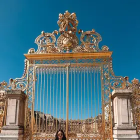
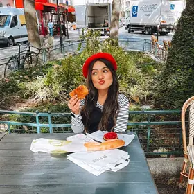
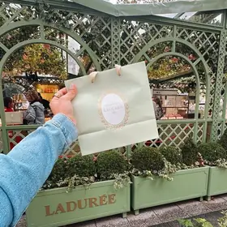
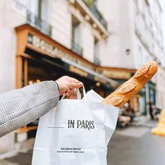

Versão desktop
Para planejar com calma, no computador.
Você está emInício
Guia de viagem · Paris
o roteiro que eu faria de novo.
Roteiro por região, para quantos dias você tiver, com os lugares, as dicas e os links que eu mais recomendo.
Pagamento seguro · Acesso por e-mail logo após a confirmação · Garantia de 7 dias
É Paris através dos meus olhos e das minhas experiências, num roteiro que se adapta à sua viagem.
Não é só um itinerário: tem as locações de Emily in Paris, passeios para reservar com desconto, onde comer bem e barato, os melhores bairros para ficar, transporte e segurança, brechós, dicas de foto e coisas de graça. Você não precisa seguir tudo: pegue uma região, vários dias, ou monte o seu.
Dentro do guia
Tem um jeito de ver a Torre Eiffel por dentro sem pagar ingresso.
Não importa quantos dias você tem: o guia é organizado por região, então sempre tem o que fazer. Escolha uma e espie.
Toque num número para ver a região.


No guia, você encontra as melhores paradas, spots para foto e links com desconto.
Um gostinho do que vem no arquivo. Toque para folhear.
 O resto está no guia
O resto está no guiaVocê recebe os dois arquivos, com o mesmo conteúdo.
Para planejar com calma, no computador.
Para consultar durante a viagem, com uma mão só.
Baixe o PDF e use sem internet.
Toque em uma janela para abrir e ver o que vem no guia.
Sempre que eu conhecer um lugar novo, você vai saber.
Os lugares que eu mostro no guia, do jeito que eu vivi cada um. Arraste as fotos.








Improvisar em Paris pode custar dinheiro e horas.
No guia, tudo isso já vem resolvido.
Cami tem 32 anos, já conheceu 38 países e mora no Canadá há 4 anos. Vai com frequência a Paris.
Seu amor por novas culturas e sabores faz a Cami explorar ao máximo os destinos e planejar os mínimos detalhes das viagens. Também leva grupos de viagem pelo mundo e ama compartilhar experiências!
Menos tempo planejando, mais tempo em Paris.
Menu do dia
Guia completo de Paris
R$ 67,90
Comprar o guiaGarantia de 7 dias.
Você recebe o link por e-mail, com a versão desktop e a celular do PDF. Cupom CAMILAMONTREAL5 nos passeios do guia.
Site em português: preço em reais. Para ver em inglês, use o botão EN.
Dúvidas? Fale comigo no InstagramAssim que o pagamento for confirmado, você recebe um e-mail com o link do PDF interativo, com versão para desktop e versão para celular, com sumário clicável, botões, reels e mapa interativo.
Para quantos você tiver. O roteiro é organizado por região e cada região funciona sozinha: se fica menos dias, escolha as que combinam com você; se fica mais, há ideias como Versalhes, Giverny e Disney.
Sim. Há uma dica para quem tem uma escala longa: como sair do aeroporto, ver o essencial e voltar a tempo, com o meu dia de 4 horas em Paris.
Preços e horários em Paris mudam. O guia aponta os sites oficiais para conferir antes de reservar e recebe atualizações gratuitas pelo mesmo link.
São links de reserva de passeios, chip, seguro e câmbio com o meu cupom. Alguns parceiros me pagam uma comissão quando você reserva pelo link, sem custo extra para você.
Não. O guia é todo em português e traz três frases para pedir como local e dicas de etiqueta, como começar toda conversa com “bonjour”.
Funciona. Há uma versão pensada para a tela do celular, e você pode baixar o PDF e abri-lo sem internet. Links e vídeos precisam de conexão.
O guia não é focado em crianças, mas tem uma seção com ideias, como o Jardim de Luxemburgo, a Cité des Sciences e a subida na Torre Eiffel.
O guia compara os melhores bairros para ficar, para você escolher, mas não faz reserva de hotel.
Você pode pedir o reembolso em até 7 dias. Escreva para o contato que está no rodapé da página.
Há um e-book separado só com dicas para a Disney: camilamontreal.com/ebooks.
Sim! Você pode ver todos os meus roteiros no meu site: camilamontreal.com/ebooks.
Você já escolheu o destino. Falta decidir como chegar lá: com 30 abas abertas ou com um guia na mão.
Quero o guia de ParisVai à Disneyland Paris? Tenho um e-book só com dicas da Disney. camilamontreal.com/ebooks